| |
|
GENİŞLETME, İYİLEŞTİRME VE ÜSTYAPI GÜÇLENDİRME
|
|
Genel Bilgiler Başlangıç Verileri Plan Tasarımı Genişletme ve İyileştirme Profillerinin Çıkarılması Kırmızı Kot Tanımlaması Deverler Genişletme ve İyileştirme Menüsü
Parametreler Seçilmiş Malzeme Kazıma (Frezaj) ve Söküm Kamalar ve Basamaklar Üstyapılar Genişletme ve İyileştirme Parametrelerinin Bölümlendirilmesi
Güçlendirme Tablosu
Mevcut Üstyapı Verileri
Üstyapı PaketiTanımlanmış Doğal Zemin Kenar Zayıf Zemin Kazıları Uygulama Lokal Kazımalar (Frezaj) Bölünmüş Yollarda Genişletme ve İyileştirme Hesaplamalar Özel Paftalar, Çizim Modları ve Listeler Genel Bilgiler ISTRAM®/ISPOL® tarafından tanımlanan genişletme ve iyileştirme projeleri, fotogrametrik alımlar veya araziden yapılan topoğrafik ölçümler gibi bir dizi başlangıç verisine dayanır. Yeni güzergah eski güzergah üzerine oturacaktır ve bu noktada, plan ekseninin aliymanları tasarlanırken programın sunduğu çeşitli bağlantı (yakalama) tipleri özel bir önem taşır. Zayıf zemin kazısı sınırı (saneo) büyük önem kazanacaktır, çünkü mevcut üstyapının kullanılabilir kısmını ayıracak olan sınır bu olacaktır. 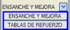Yeni güzergah projelerine göre, hem plan tasarımı hem de boykesit ve enkesit tasarımı açısından aşağıda detaylandırılan bir dizi farklılık bulunmaktadır, zira program bu tür projeler için çok sayıda özel araçla donatılmıştır. Başlangıç Verileri Genişletme ve iyileştirme projelerinde başlangıç verileri şunlardan gelebilir:
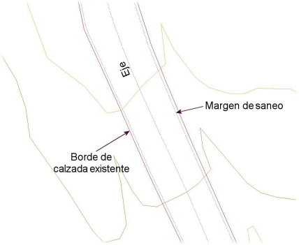
Örneğin, eski üstyapıdan 25 santimetre genişliğinde bir şeridin sökülmesi gerektiği varsayılırsa:
Mevcut üstyapı kalınlığına gelince, eski yolun üstyapı paketinin gerçek kalınlık verisinden çok, yeni proje açısından kabul edilen boyut esas alınır. Plan Tasarımı 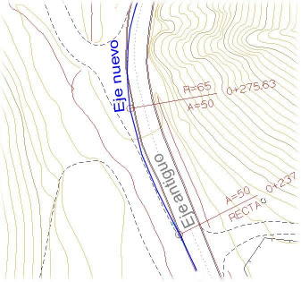Yeni güzergah eski güzergah üzerine oturacaktır ve bu noktada, plan ekseninin aliymanları tasarlanırken ilgili açılır menüden etkinleştirilebilen çeşitli bağlantı (yakalama) tipleri özel bir önem taşır. Genellikle projenin kapsamına bağlı olarak, kurplar açılarak daha büyük yarıçap verilir, mevcut genişlikler artırılır, tehlikeli kurplar güzergahtan çıkarılır veya düz kesimlerle değiştirilir, vb. Aliymanların geçiş noktalarını vermek ve yarıçapları ayarlamak için, programın sunduğu tüm olanaklarla plan ekseninin interaktif olarak değiştirilmesi çok faydalıdır. Ayrıca, yeni plan eksenini mevcut platform kenarlarına paralel çizgiler arasına yerleştirme imkanı da şüphesiz faydalıdır. Genişletme ve İyileştirme Profillerinin Çıkarılması Profil çıkarımı için referans yüzey, en azından araziye karşılık gelen çizgileri ve mevcut platformun kenarlarını içermelidir. Ayrıca, mevcut üstyapılı profillerin herhangi bir SAY (Sayısal Arazi Yüzeyi)'nden (sadece eşyükselti eğrilerinden oluşan bir harita yüzeyi olmak zorunda değil, yani bir .ttp üçgenlemesi, kotlu bir görüntü veya görüntü seti ya da bir lazer tarama veritabanı olabilir) ve varsa mevcut platform kenarları ve zayıf zemin kazısı sınırlarından çıkarılması da mümkündür. Bu durumda mevcut platform kenarı, zayıf zemin kazısı ve refüj çizgilerinin belirli bir yüzeye ait olması gerekmez. Enkesit çıkarma menüsü, genişletme ve iyileştirme durumları için aşağıdaki seçenekleri sunar: 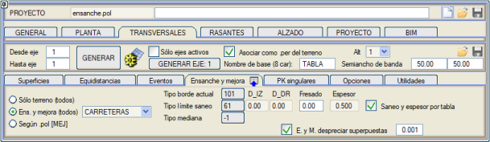
Gen. ve İyileştirme (tümü) seçeneği etkinleştirildiğinde, mevcut kenar ve zayıf zemin kazısı sınırları için kullanılan çizgi tiplerine ve mevcut üstyapı paketinin kalınlığına karşılık gelen yeni kutucuklar belirir. Mevcut kenar tipi'ne karşılık gelen kutucuğa tıklayarak, mevcut platformun kenarlarını temsil eden çizgi tipi, fareyle ekrandan seçilerek veya klavyeyle yazılarak girilebilir. Zayıf zemin kazısı sınırı tipi'ne zayıf zemin kazısı kenarını temsil eden çizgi tipi girilir. Kalınlık, mevcut üstyapı paketine atanan boyutu temsil eder. D_SOL ve D_SAĞ alanlarında, zayıf zemin kazısı sınırları haritadaki bir çizgiden belirli bir mesafede tanımlanabilir. Kazıma (Frezaj) kutucuğu aracılığıyla mevcut üstyapıya ön kazıma yapılabilir. Bu araç, kullanılabilir platformun üst kotunu o miktar kadar düşürür. Bazı açıklayıcı notlara bakalım. Refüj tipi seçeneği, bir otoyolun platformlarının iç kenarları için özel bir çizgi tipi seçmeye olanak tanır. Bu durumda, dış kenarlar belirli bir çizgi tipiyle ve iç kenarlar başka bir tiple temsil edilmelidir. Hem mevcut platformun kazılacak payı hem de mevcut üstyapının kalınlığı değişken olabileceğinden, program bunları ayrı bir tabloda tanımlamaya olanak tanır: güçlendirme tablosu. Bu tabloyu kullanmak için, Kazı ve kalınlık tabloya göre kutucuğunu işaretlemek gerekir. G. ve İ. çakışanları yoksay seçeneği, haritayı aşırı derecede temizlemeye gerek kalmadan profilleri çıkarmayı mümkün kılar ve belirtilen toleransa bağlı olarak tekrarlanan, kısmen çakışan veya küçük mesafelerde sahte paralel çizgilere izin verir. Mevcut platform kenarlarını temsil eden çizgi tipleri beyan edildikten sonra, ISTRAM®/ISPOL®, her profil için mevcut platform sınırlarının ve zayıf zemin kazısı sınırının, eksene en yakın ilgili tipteki iki çizgi olacağını kabul eder; bu çizgiler eksenin her iki tarafında veya her ikisi de aynı tarafta olabilir. Bu nedenle, diğer farklı çizgilerin (hendek tabanları, yarma veya dolgu etekleri vb.) platform kenarı tipini almasından kaçınılmalıdır. 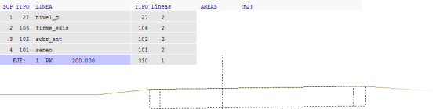
Mevcut üstyapılı profilleri elde etmenin bir diğer yolu da Alanlar'dır: 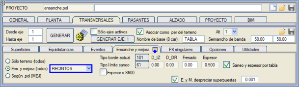
Alanlar seçeneği de karayolları içindir ve mevcut platformları, adacıklar içerebilen kapalı alanlar aracılığıyla tanımlamaya olanak tanır. Kullanılabilir alan da başka bir çizgi tipiyle veya aynı tiple alanlar aracılığıyla tanımlanır, her iki durumda da bir mesafe eklenebilir. Her profil, mevcut platformların birkaç bağımsız parçasını kesebilir. Kazıma (Frezaj) parametresi, alanlara göre genişletme ve iyileştirme profilleri için kullanılabilir. 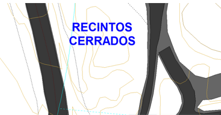
Alanlardan oluşturulmuş bir profil örneği şu şekilde olabilir: 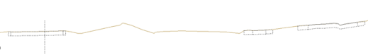
Ayrıca, Alanlar seçeneği aracılığıyla, her bir alana mevcut üstyapı paketinin farklı bir kalınlığı atanabilir. Bunun için, beyan edilenden farklı bir kalınlığa sahip olan her mevcut platform alanının içine, öznitelik olarak alan için kalınlık verilen S600 sembolü (Kalınlık 0.50) eklenir. Alanlara göre genişletme ve iyileştirme enkesitleri çıkarılırken Kalınlık x S600 seçeneği belirir. Bu sembolü içermeyen alanlar, normal veya güçlendirme tablolarına göre kalınlığı alacaktır. 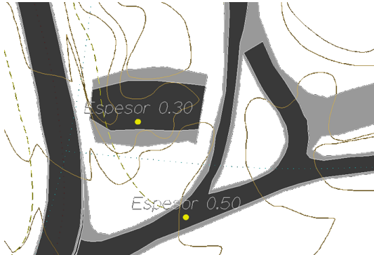
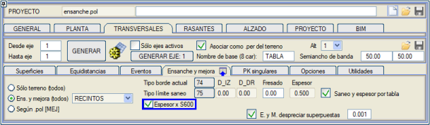
Mevcut yolların genişletilmesi ve iyileştirilmesini içeren ve aynı zamanda yeni güzergah eksenlerini de kapsayan bir projede, .pol'e göre [İYİLŞ] seçeneği, proje tablosunda [İYİLŞ] tuşu aktif olan eksenler için iyileştirme tipi enkesitlerin çıkarılmasına olanak tanır ve geri kalanı için konvansiyonel profiller oluşturur. Çizgi tipi -> Profilde Kod seçeneği etkinleştirildiğinde, enkesit tarafından kesilen harita çizgi tipleri, profilin some noktalarını kodlamak için kullanılır. Eksen Kodu kutucuğundan eksen noktası için bir kod ve Kazı Kodu kutucuğundan zayıf zemin kazısı sınırı ile kesişim için başka bir kod belirtme imkanı tanır. Bu son durum, sadece zayıf zemin kazısı sınırı haritada çizili olmadığında, ancak platform kenarının aynı çizgisi artı isteğe bağlı bir mesafe ile tanımlandığında mümkündür. Tüm bunlar bu tür projelerde çok faydalı olabilir. 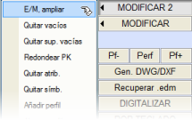Genişletme ve iyileştirme profilleri elde edildikten sonra, ISTRAM®/ISPOL® profil düzenleyicisinin [DEĞİŞTİR 2] → G/İ, genişlet seçeneği kullanılarak mevcut terasmanı araziyle kesişene (drenaj) kadar genişletmek mümkündür. Program ayrıca, [.top'tan .per oluştur] seçeneği aracılığıyla bir nokta bulutundan genişletme ve iyileştirme enkesitleri elde etmeye ve [G. ve İ. yüzeyleri ekle] aracını kullanarak mevcut bir arazi profilleri dosyasına mevcut platform yüzeylerini eklemeye olanak tanır. 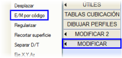Öte yandan, mevcut bir platform kenarına ait olarak kodlanmış arazi noktalarını içeren profil dosyalarında önceden bilgi sahibi olmak sıkça rastlanan bir durumdur. ISTRAM®/ISPOL® profil düzenleyicisinin [DEĞİŞTİR] → G/İ koda göre seçeneği aracılığıyla genişletme ve iyileştirme profilleri dosyalarına dönüştürülebilirler. Son olarak, mevcut bir platformun bulunduğu aç-kapa tünel bölümlerinde, o üstyapının sökümünün dikkate alınması ilgi çekici olabilir. Bunun için BOYKESİT → PARAMETRELER'de bulunan Aç-kapa tünel profillerinde mevcut platformu koru seçeneğinin aktif olması gerekir. Kırmızı Kot Tanımlaması Mevcut yola bir şekilde dayanan yeni yapının boykesitini oluşturmanın birkaç yolu vardır. Bunlar arasında, KIRMIZI KOTLAR dikey menüsünün [ARAÇLAR] menüsünde bulunan iki olasılık şunlardır:
İyileştirilmiş ve iyileştirilmemiş bölümlerin tüm parametrelerinin uyumlu olması için, incelenen bölümün başlangıç ve bitiş noktalarını gözden geçirmek ve yeni platformu bir sonraki bölümdeki öncekiyle eşleştirmek için o noktalarda mevcut üstyapıdan ilgili üstyapı kalınlığını kazımak gerekecektir. Kırmızı kot bölümleri otomatik olarak oluşturulduktan sonra, yeni bölümler ve düşey kurplar ekleyerek, silerek veya değiştirerek düzenlemek mümkündür. Arazi profilinin gösterimine gelince, bir GENİŞLETME VE İYİLEŞTİRME projesi söz konusu olduğunda veya GÜÇLENDİRME TABLOSU'nda veri beyan edildiğinde, arazi profili şu renkleri alır: YENİDEN YAPIM bölgesinde beyaz, KAZIMA+GÜÇLENDİRME bölgesinde kırmızı ve GÜÇLENDİRME bölgesinde macenta. Deverler DEVERLER menüsünden, eski platformun deverlerini, onu içeren arazi profillerinden türeterek elde etmek ve [G. ve İ.] düğmesi aracılığıyla yenisine aktarmak mümkündür: 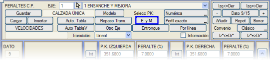
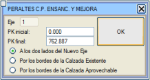Bu seçenek, çeşitli hesaplama olanakları sunan bir diyalog kutusu açar ve eski platformdan deverlerin türetilmesini istediğiniz KM aralığını belirtmenize olanak tanır. Eğer F ekseni, F1 ve F2 platformun sol ve sağ kenarlarını ve S1 ve S2 kullanılabilir platformun sol ve sağ kenarlarını temsil ediyorsa, mevcut olasılıklar şunlardır:
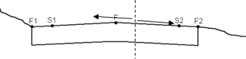
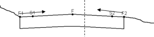
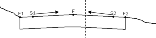
Genişletme ve İyileştirme Menüsü Genişletme projelerinde enkesit hesabına özel olarak uyarlanmış kayan bir menüdür: 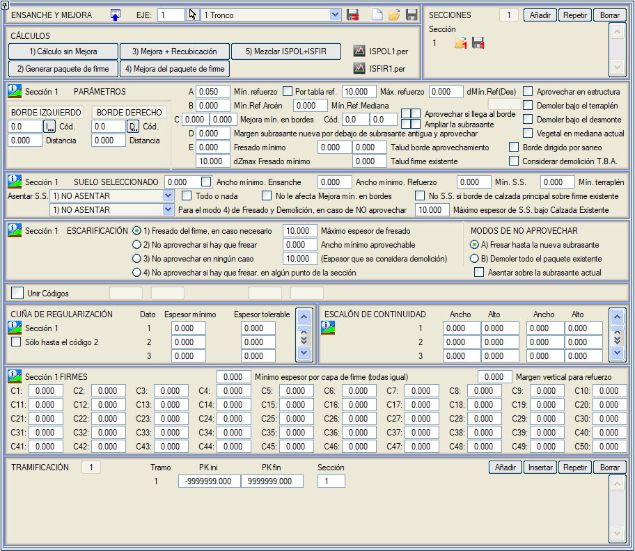
Diyalog kutusunun üst kısmında bulunan [Kaydet] ve [Yükle] düğmeleri, bu menünün verilerini sırasıyla .eym uzantılı dosyalar aracılığıyla kaydetmeye ve geri yüklemeye olanak tanır.  aracılığıyla menüyü açarız. Açmazsak, aşağıda ele alacağımız farklı sekmeleri görebiliriz. aracılığıyla menüyü açarız. Açmazsak, aşağıda ele alacağımız farklı sekmeleri görebiliriz.Parametreler  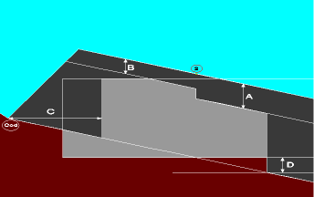
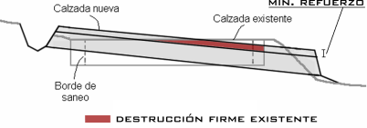
Yeni
kırmızı kot, eskisinden çok aşağıda olduğunda, kaplama tabakasının
tüm kalınlığıyla yerleştirilebilmesi için mevcut üstyapıyı kazımak veya
sökmek gerekir.
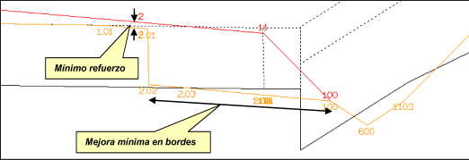
Eğer eklenen üstyapı paketi daha dar olsaydı, eklenen şeritte uygulama makinesinin girişine izin verecek boyuta ulaşana kadar mevcut üstyapı sökülür.
Mesafe referansı bir kod'dan tanımlanabilir, ancak varsayılan olarak 100 kodu kullanılır. Kenarlarda minimum İyileştirme (Mesafe ve kod) tanımlanmışsa ve bu, faydalanmanın başlangıcını mevcut platformun içine doğru iterse, o zaman boyutlarını koruması için devamlılık basamağı da içeri doğru itilir.
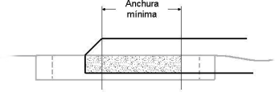
Güçlendirmenin sadece bir platforma, örneğin sadece sağ platforma uygulandığı otoyollarda, sol kenara refüj bölgesinde bir sağ taraf kodu (düğme [D]) uygulanabilir, 1, -11 veya -100 gibi bir kod kullanılarak.
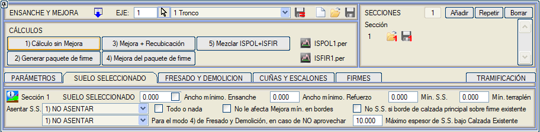
Genişletmedeki SM'nin minimum
genişliği, programın eski sürümlerinde yapıldığı gibi 100 koduna kadar
değil, SM'nin dış tanım koduna kadar ölçülür. Ayrıca, minimum genişlik
karşılanmazsa, SM'yi temizleme palyesinin (P.E.) altına uzatmaya
çalışma seçeneğimiz de vardır.
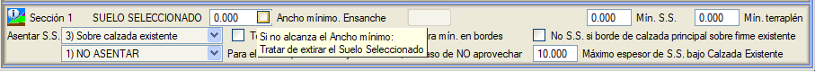
Eğer Seçilmiş Malzemenin mevcut
platform veya kullanılabilir platform üzerine oturduğunu ve ayrıca
minimum bir S.M. kalınlığı koyduğumuzu varsayarsak: eğer terasmanın
altında, minimumdan daha az bir kalınlıkta mevcut üstyapı üzerine
oturan bir SM kalınlığı belirirse, bu minimum elde edilene kadar kazıma
yapılır.
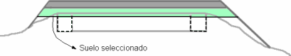
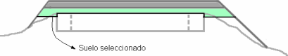
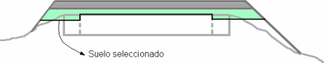
Seçilmiş malzeme için Mevcut
platformu sök davranışı etkinleştirilmişse ve birden fazla S.M.
tabakası varsa, o zaman söküm en alt tabaka ile yapılır ve üsttekiler
OTURTMA gibi davranır.
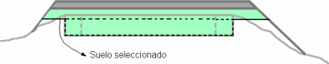
Hepsi ya da hiçbiri: Bu seçenek etkinleştirildiğinde davranış şu şekildedir:
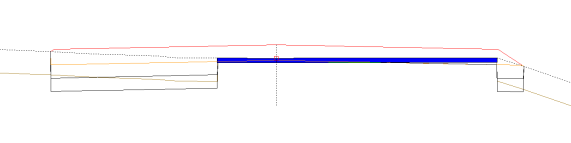
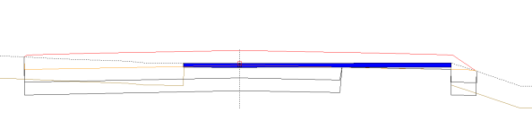
Kazıma (Frezaj) ve Söküm Program aşağıdaki yüzey hazırlığı olanaklarını sunar:
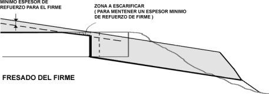
Ayrıca bir Maksimum kazıma kalınlığı tanımlanabilir, öyle ki bu değer aşılırsa söküme geçilir.
Minimum kullanılabilir genişlik, değer sıfırdan büyükse çalışır. Bu durumda, mevcut platformun kullanılabilir şerit genişliği bu değerden küçükse, hiçbir şeyden faydalanılmaz.
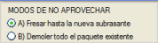Kullanmama durumunda iki seçenek arasında tercih yapılabilir:
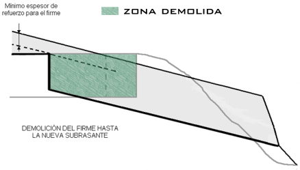
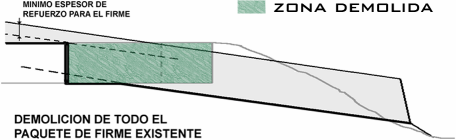
Eğer iki kod arasında sınırlı bir Seçilmiş Malzeme tanımlanmışsa ve Genişletme ve İyileştirme'de aynı anda Parametreler:Dolgu altında Sök ve Kazıma ve söküm :Mevcut paketin tamamını sök işaretlenmişse, o zaman: Yeni terasmanın altında mevcut paketin sökülmesi gereken bölgelerde, seçilmiş malzemeyi sınırlayan kodların dışında kalan bölgelerde dolgu malzemesi seçilmiş malzeme yerine Zayıf Zemin Dolgusu olacaktır.
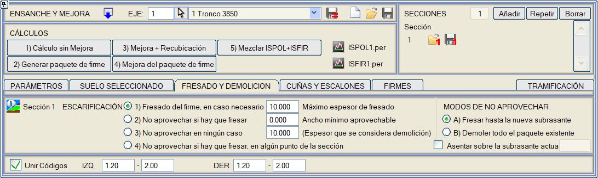
Kamalar ve Basamaklar
Bu kama, üstyapı bileşenlerinde çalışır. Minimum kalınlık ve tolere edilebilir kalınlık değerleri (tolere edilebilir kalınlık minimum kalınlığı içermelidir), minimum güçlendirme tabakasının altından ölçülür ve davranışları aşağıdaki gibidir:
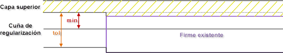
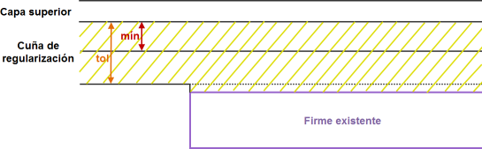
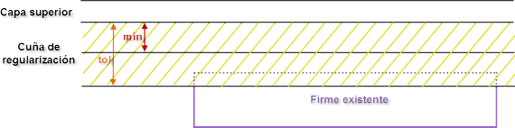
Bu iki değer kullanıldığında, üstyapı katmanlarının minimum kalınlıkları penceresinde, düzenleme kaması olarak kullanılacak katman için burada girilen aynı minimum kalınlık girilmelidir. 20 adede kadar düzenleme kaması tanımlamak mümkündür; ikinci kamanın minimum ve tolere edilebilir kalınlıkları birincinin tolere edilebilir kalınlığından, üçüncününki ikincinin tolere edilebilir kalınlığından ve bu şekilde devam ederek ölçülür, aşağıdaki şekilde görülebileceği gibi: Program, genişletme projelerinde alt kazı çizgisi için aşağıdaki kodlamayı yapar:
Sadece kod 2'ye kadar kutucuğunu işaretlersek, kamalar sadece ana platformda kazılır ve kod 2'den itibaren sadece minimum güçlendirmeyi sağlamak için kazıma yapılır.
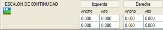Kullanılan paketin yanlarında minimum güçlendirme kalınlığını artırmaya olanak tanır. Bu basamak, her iki taraf için genişliği ve yüksekliği ile tanımlanır ve en fazla 2 devamlılık basamağı girilebilir. Genişliğe negatif bir değer verilirse, mevcut platformun dışında oluşturulur. Üstyapılar
Bu değer, üstyapı paketinin her bir bileşeni için ve genişletme ve iyileştirme parametrelerinin her bir tanım aralığı için farklı değerlerle ayırt edilebilir.
Tüm parametreler eksen boyunca bölümlendirilebilir. Veriler eklenebilir, tekrarlanabilir ve silinebilir. Bölümler, TRAMİFİKASYON (BÖLÜMLENDİRME) bölümünde ve KESİTLER bölümünde, üstyapı paketlerinde yapıldığına benzer şekilde tanımlanabilir: gereken sayıda farklı kesit tanımlanarak ve kullanımları KM'lere göre bölümlendirilerek. Eğer belirli bir profil herhangi bir bölüm içinde değilse, o profilde mevcut platformun kullanımı hesaplanmaz. Güçlendirme Tablosu Güçlendirme tabloları, isteğe bağlı olarak, mevcut platformun geometrisini tanımlayan bir dizi veriyi ve platformun iyileştirilmesi için yapılacak uygulamaları tek bir menüde toplamaya olanak tanır. Güçlendirme Tabloları diyalog kutusu sekmelere ayrılmıştır. Bu diyalog kutusunun farklı sekmelerindeki KM'ler, kullanıcı KM'si verilerek de girilebilir. Mevcut Üstyapı Verileri Burada, mevcut üstyapı kalınlıkları, asfalt ve granüler temel verileri arasında ayrım yapılarak KM'ye göre tanımlanır. Bu mevcut üstyapı paketi verileri, enkesit çıkarma tablosunda (Kazı ve kalınlık tabloya göre) ilgili kutucuk işaretlenerek profil çıkarılırken dikkate alınabilir ve bu durumda güçlendirme tablosunun verileri okunur. Belirli bir profildeki mevcut üstyapı kalınlığı, o KM'deki asfalt ve granüler temel kalınlıklarını ayırt ederek, mevcut Granüler Temel için bir yüzey tipi (L237) ve toplam bütün için başka bir yüzey tipi (L106) tanımlar. Kazıma ve Söküm listesinde Asfalt sökümü ile Granüler Temel sökümü ayırt edilebilir. Tanımlanmış Doğal Zemin Burada, araziyi karakterize eden veriler ve bu zeminlerin her biri için seçilmiş malzeme kalınlığı eklenir. BOYKESİT'in seçilmiş malzeme menüsünden farklı olarak, tabloda tek bir seçilmiş malzeme tabakası yansıtılabilir ve bu tabakanın kalınlığı, BOYKESİT'in seçilmiş malzeme menüsündeki ilgili kutucuk (Güçlendirme tablosuna göre kalınlık) etkinleştirilerek doğrudan bu güçlendirme tablosundan okunur. Bu tanımlanmış doğal zemin tablosunda, başlangıç KM'si ve bitiş KM'si için seçilmiş malzemenin farklı bir kalınlık değeri (Esp.SS.i ve Esp.SS.f) konulabilir. Belirtilmezse, program başlangıç KM'sindeki kalınlığı bitiş KM'sinde tekrarlar. [SSF<=SSIsig(PKF==PKIsig)] düğmesine basıldığında, program, bir bölümün bitiş KM'si bir sonraki bölümün başlangıç KM'siyle çakışıyorsa, bir bölümün son seçilmiş malzeme kalınlığı üzerine bir sonraki bölümün başlangıç seçilmiş malzeme kalınlığını kopyalar. Bir tabloya yeni veriler girildiğinde, başlangıç seçilmiş malzeme kalınlığı girildiğinde, program bu değeri, eğer sıfır değeri varsa, son seçilmiş malzeme kalınlığı üzerine kopyalar. Seçilmiş malzemenin kalınlığıyla birlikte, aşağıdaki davranış modlarından biri seçilmelidir:
Kenar Zayıf Zemin Kazıları Zayıf zemin kazısı (veya üstyapı kullanımı) payları, tabloda farklı KM'lere göre, mevcut platform kenarına veya yeni eksene olan mesafe (metre cinsinden) verilerek tanımlanır. Her veride mesafenin mevcut platform kenarından mı yoksa eksenden mi olduğu belirtilebilir. Bu değerler, enkesit çıkarma tablosundan kesilen enkesitlerde görünen zayıf zemin kazısı sınırlarını tanımlarken, Kazı ve kalınlık tabloya göre kutucuğu etkinleştirilerek dikkate alınır. [Profili Yeniden Yap] komutu, güçlendirme tablosunda tanımlanan payları kullanarak genişletme ve iyileştirme için arazi profillerinin zayıf zemin kazısı yüzeyini oluşturur (veya zaten varsa yeniden oluşturur). [Yükle .pkd] düğmesi aracılığıyla verileri bir .pkd dosyasından (KM mesafe) okumak mümkündür. Uygulama Her bölümde gerekli olan uygulama tipi belirlenir ve üç ana tip ayırt edilir:
KIRMIZI KOT menüsünün hem Arazi Üzerinde hem de Minimum Kotlar seçenekleri, bu verileri güçlendirme tablosundan okuma imkanı sunar. GENİŞLETME VE İYİLEŞTİRME menüsünde üstyapı için minimum güçlendirme kalınlığı, Güçlendirme tablosuna göre kutucuğu etkinleştirilerek tablodan çıkarılabilir. Profili Yeniden Yap + Kazımayı Listele komutundan yola çıkarak:
Bu komut, profili yeniden oluşturacağımız eksen için tanımlanan sınır hatlarını dikkate alacaktır. Uygulama, sınır hatlarının kırdığı bölgedeki yüzeyleri değiştirmeyecektir. Bunun için ekteki şekilde gördüğümüz "tiki" işaretlemek gerekir. Aynı şekilde, Hesap Bölgeleri'nde beyan edilen inşa edilmeyen bölgeler de dikkate alınacaktır. Lokal Kazımalar (Frezaj) Her lokal kazıma, iki km, eksene iki mesafe ve kazıma derinliği ile tanımlanır. (Bu dikdörtgenler plan üzerinde gösterilir). Profili yeniden yap ve kazımayı listele aracıyla, bu lokal kazımalar arazi profilleri üzerinde gerçekleştirilir, mevcut platform ve zayıf zemin kazısı yüzeyleri değiştirilir ve kazınan hacimler listelenir. .tfl dosyalarını, listeyle sekmeli olarak: pk1 pk2 d1 d2 kazıma, kaydetme/yükleme imkanı, hesap tablolarından içe/dışa aktarmayı kolaylaştırır. Ayrıca, lokal kazıma alanlarını, bir kazıma kalınlıkları aralığına göre farklı çizgi tipiyle çizme, başlangıç ve bitiş km'lerini ve kalınlığı not etme imkanımız da vardır. Artık dosyaları kullanıcı KM'lerinde yükleyebilir veya kaydedebiliriz. Üstyapı Paketi ÜSTYAPI PAKETİ'ne karşılık gelen diyalog kutusundan, tüm kesit için üstyapılar, sadece genişletme bölgesinde uygulanacak üstyapılar ve güçlendirme için özel üstyapılar arasında ayrım yapmak mümkündür. Bölünmüş Yollarda Genişletme ve İyileştirme Bölünmüş yollarda genişletme ve iyileştirme, tek platformlu yollardaki gibi yapılır, tek farkı enkesit çıkarma menüsünde platformların iç kenarları için çizgi tipini seçmek gerektiğidir. Hesaplamalar Sonraki hesaplama süreci şu sırayla olacaktır:
Bu şekilde, eski kırmızı kot, üstyapı paketi vb. dikkate alınarak yeni platform oluşturulur. 5. ISPOL+ISFIR Karıştır: Mevcut eksenin ISPOLn.per ve ISFIRn.per dosyalarının yüzeylerini ISPOLn.per dosyasında karıştırır. Program, PROJE'den hesaplama yaparken, söz konusu eksenin [HES], [İYİLŞ], [YKB] ve [YÜS] düğmeleri aktifse, ilk dört eylemi otomatik olarak gerçekleştirir. Beşinciyi uygulamak için Üstyapıları dahil et açılır menüsünde Evet'i işaretlemiş olmamız gerekir. Hesaplanan profillerin düzenlenmesi, yeni platformun eski platformun kenarlarından çıktığı duvar, yüksek yarma vb. bölgelerde önerilen deverlerde ve hatta plan ekseninde veya genişlik diyagramında değişiklikler önerebilir. Özel Paftalar, Çizim Modları ve Listeler  Plan gösterimi için, program .lil çizim modlarında kullanılmak üzere, D.lil ve D2.lil (bölünmüş yollar için) gibi özel komutlara sahiptir ve bunlar kazıma, söküm ve kullanım alanlarına karşılık gelen çizgileri göstermeye olanak tanır. Plan gösterimi için, program .lil çizim modlarında kullanılmak üzere, D.lil ve D2.lil (bölünmüş yollar için) gibi özel komutlara sahiptir ve bunlar kazıma, söküm ve kullanım alanlarına karşılık gelen çizgileri göstermeye olanak tanır.Bu çizim modları daha genel olanlarla tamamlayıcı olabilir, bu nedenle ekseni önce daha genel bir çizim moduyla çizmek veya ikincisini düzenleyip bu tür bir proje için özel çizim komutlarını eklemek ilginçtir. Enkesit paftalarının gösterimi için, .gut şablonları, genişletme ve iyileştirme kesitleriyle ilişkili karakteristik noktaların verilerini göstermeye olanak tanır (bu noktalar, kazıma ve söküm listesinde (fresa.res) görünen aynı noktalardır. Bunun için, bu şablona, gitarın özniteliklerine karşılık gelen bölümde, kazıma ve söküm noktalarının (F ve D) bir özelliğinin (örneğin, kot) etiketlenmesini eklemek yeterlidir. Kübajlara gelince, eksenin hacimler listesinde (cvol#.res, # eksen numarası olmak üzere) ÜSTYAPI_KAZISI kavramı görünecektir. Ama ayrıca bu tür projeler için özel bir liste vardır: kazıma ve söküm listesi (fresa.res): Bu listeyi belirli bir değerin katları olarak alabiliriz ve bu durumda birikimli hacimler için yazdırılmayan ara profiller dikkate alınır. Yapışkan ve astar tabakası alanları listeleri de, oturma yüzeyi ölçülürken, tüm üstyapı, sadece yeni üstyapı ve sadece mevcut üstyapı üzerine oturan üstyapı arasında ayrım yapma imkanını da içerir: |
||||||||